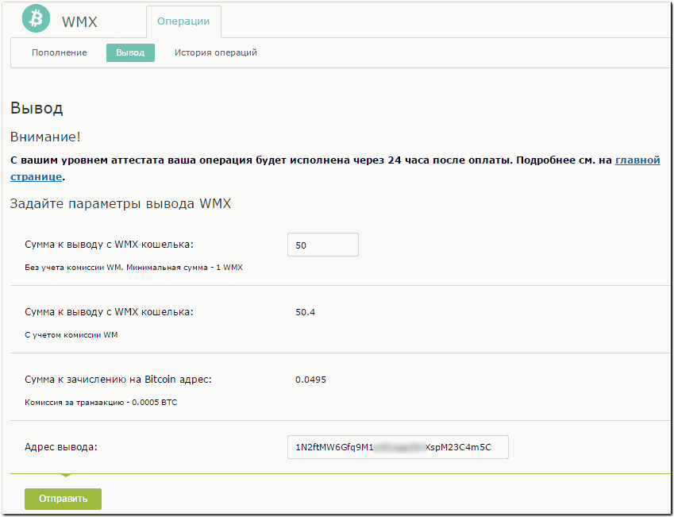
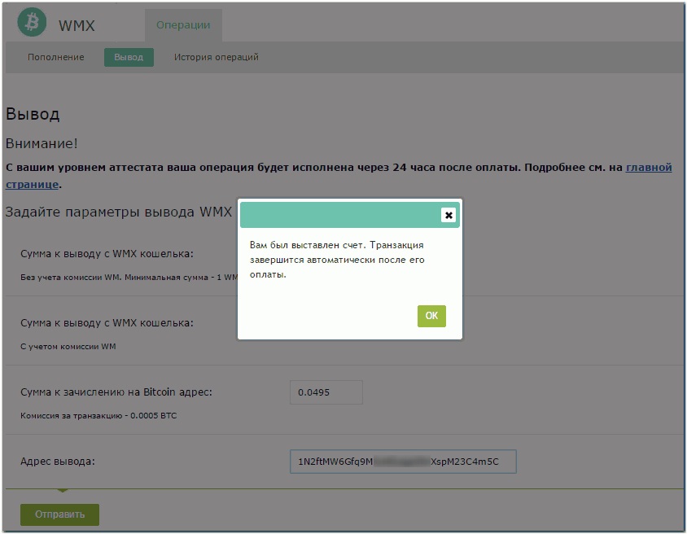
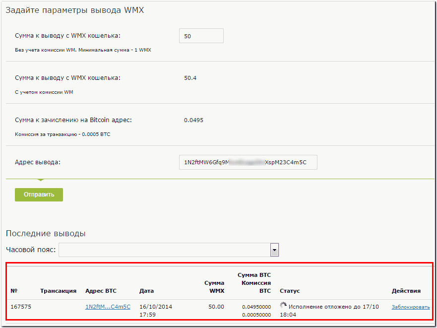
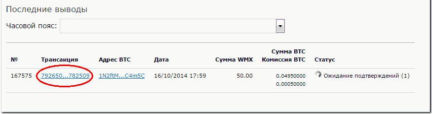
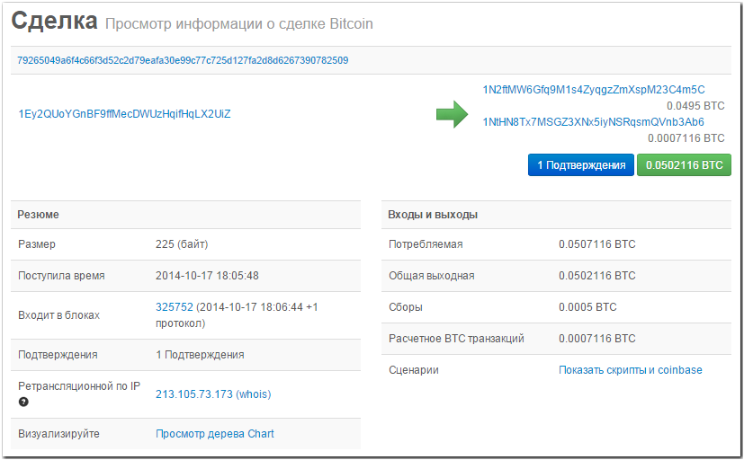
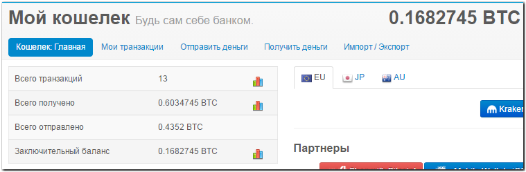
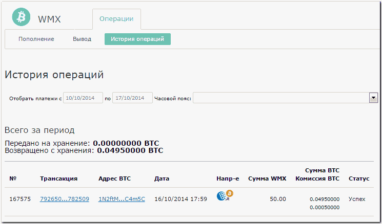

Вывод средств с WMX-кошельков
Сервис пополнения и вывода WMX (wmx.wmtransfer.com) дает возможность участникам WebMoney выводить титульные знаки WMX из системы, т.е. переводить свои BTC с хранения на Bitcoin-кошельки.
Для вывода WMX необходимо перейти на соответствующую страницу сервиса https://wmx.wmtransfer.com/Home/Withdraw, ввести сумму к выводу (1 WMX = 0,001 BTC), адрес вывода и нажать кнопку "Отправить".

После того как сервис выставит счет для оплаты

необходимо перейти в свой WebMoney Keeper и оплатить счет (см. пример оплаты).
После поступления средств начнет формироваться транзакция.

Для завершения перевода необходимо дождаться получения не менее шести подтверждений. Параметры перевода в системе Bitcoin можно получить, нажав на ссылку с номером транзакции (появляется после поступления первого подтверждения).

Откроется новая вкладка (окно) браузера с данными о проводимой сделке.

После получения необходимого количества подтверждений средства будут зачислены на bitcoin-кошелек.

Все выполнявшиеся через сервис платежи ввода-вывода WMX отображаются в разделе История операций.
